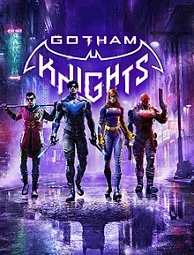

Gotham Knight
 Gotham Knights
RELEASE DATE: 21ST OF OCTOBER, 2022
PRICE: TBD
DEVELOPER: WB GAMES MONTREAL
MORE INFORMATION:
The long awaited return of the batman games is on its way. Play as four of batmans oldest friends and allies as you protect gotham from the likes of evil. With the release of this long awaited game just around the corner, we'll have to see if its as good as we want it to be.